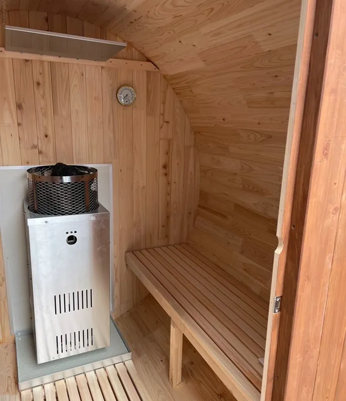
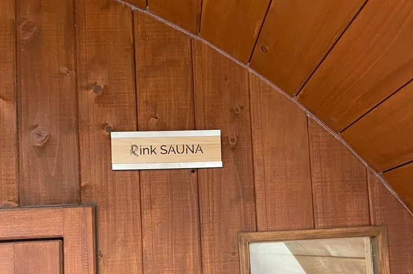

「バレルサウナの耐用年数はどれくらい？」「長く使うためのメンテナンス方法が知りたい」など、お悩みではありませんか？バレルサウナはリラックス効果が高く人気ですが、適切なメンテナンスをしなければ寿命が短くなります。
こちらでは、バレルサウナの耐用年数を最大化する方法や素材による耐久性の違い、寿命を縮める使い方や修理費用の目安まで詳しく解説します。
6次産業により国産ひのきを使用した高品質なバレルサウナをコストパフォーマンスよく提供しているRink SAUNAがお届けする情報です。最後まで読めば、長期間快適にバレルサウナを楽しむためのポイントがわかるでしょう。
バレルサウナの寿命を最大化！耐用年数と素材

バレルサウナを購入する際、気になるのはその耐用年数ではないでしょうか。ここでは、バレルサウナの一般的な寿命や、素材による耐久性の違いについて解説します。
バレルサウナの寿命はどれくらい？長く使うためのポイントとは
バレルサウナの寿命は一概に「○年」とは言えず、使用される木材の種類や設置環境、日々のメンテナンス状況によって大きく左右されます。
とはいえ、適切なケアを行えば10年以上使い続けられるケースも多く、長期的に楽しむことが可能です。
以下に、バレルサウナの寿命に影響を与える主な要因をまとめました。
| 要因 | 寿命への影響 |
|---|---|
| 使用頻度 | 使用頻度が高いほど、木材の劣化やストーブの消耗が早まる。 |
| 環境 |
|
| メンテナンス | メンテナンス不足は木材のひび割れ、カビ、金属部分のサビにつながる。定期的な再塗装やバンドの締め、換気などで、綺麗な使用状態を維持することが可能 |
| 材質 | 安価な輸入材は約5年程度で劣化が進むため、こまめな浸水対策・防腐処理が必要なのに対し、ひのきやレッドシダーは、耐久性が高く長寿命。 |
たとえば、国産ひのきは耐久性が高いことで知られています。適切なメンテナンスをすれば、長期間美しさを保てるでしょう。一方、安価な輸入材の品質にムラがあり、耐久性も国産ひのきに劣っているため、使用寿命がかなりの差（2倍以上）があります。
バレルサウナの寿命を左右する要素は複雑に絡み合っています。そのため、一概に「必ず何年持ちます」とは断言できませんが、木材の性質を理解し、適切な修正やメンテナンスを行うことで、より長くバレルサウナを楽しめるでしょう。
素材による耐久性の違い（国産ひのきと輸入材の違い）
バレルサウナの耐用年数は、素材によって大きく左右されます。以下は、国産ひのきと輸入材を比較した表です。
| 項目 | 国産ひのき | パイン・スプルスなどの輸入材 |
|---|---|---|
| 耐久性 | 優れている（構造材） | 劣る（化粧材） |
| 安全面 | 安全性が高い | 森林管理基準（FSC等）未認証のケースも |
| 寿命 | 高耐久（10年以上使用可能） | 材質によりバラつきがあり、5〜6年程度が目安 |
| 価格 | 作りがしっかりしているため比較的高価 | 格安の金額設定が多い |
| 香り | ひのき特有の芳香 | 樹種による |
国産ひのきは、強度と耐久性に優れ、湿気に強いという特徴があります。そのため、高温多湿の環境で使用されるバレルサウナにとって理想的な素材といえるでしょう。また、ひのき特有の芳香はリラックス効果を高め、サウナ体験をより豊かなものにしてくれます。適切なメンテナンスを行えば、国産ひのきのバレルサウナは長期間に渡りその品質を維持し、使用寿命を延ばすことが可能です。
一方、輸入材は種類も豊富で、価格が比較的安価であるというメリットがあります。しかし、国産ひのきと比較すると耐久性や安全面などが劣る場合もあり、寿命も短くなる傾向があるため注意が必要です。また、輸入材の中には防腐処理や乾燥処理が不十分なものも存在し、それらは腐食やひび割れのリスクを高める可能性があります。
バレルサウナを選ぶ際には、初期費用だけでなく長期的な視点で素材の特性を理解し、将来的なメンテナンス費用や使用寿命も考慮することが大切です。
バレルサウナを長持ちさせるメンテナンス方法

バレルサウナを長く愛用するためには、定期的なメンテナンスが欠かせません。適切なメンテナンスを行うことで、寿命を延ばし、快適なサウナ体験を長く楽しめます。
ステンレスバンドの締め上げ
ステンレスバンドのボルト締め上げを定期的に⾏う必要があります。
特に組⽴後すぐは、ヒーターやストーブで熱を加えた度にボルト締まりを確認して、緩みがある場合は締めてください（初期10回程度）。その後は、使⽤頻度に応じて1～2ヶ⽉に⼀度、実施してください。
反対に、⽊が⽔分を吸って膨張している際は、扉建付け⼲渉やバンドル破損の原因にもなりますので、ステンレスバンドを緩めてください。
木材の保護
バレルサウナの外壁は、風雨にさらされるため、定期的な木材保護が必要です。木材保護塗料を塗布することで、劣化を防ぎ、美しい外観を保てます。塗布頻度は、3～4年に一度が目安です。上塗り再塗装（水性キシラデコール・エクステリア・ウォルナット色など）してください。
清掃
サウナ室内は、使用後に汗や皮脂などの汚れが付着するため、衛生面からも定期的な清掃が必要です。絞った濡れたタオルなどで拭き掃除をして、十分に乾燥させることが大切です。カビの発生を防ぐためにも、換気をしっかり行いましょう。もし、カビが発生した場合は、木材に使用できるカビ取りスプレーなどを使ってカビを除去してください。
定期的な点検
定期的にサウナ本体の点検を行い、破損箇所がないか確認しましょう。ドアの開閉やヒーターの動作、照明器具などに異常がないか確認することが大切です。早期に問題を発見することで、大きな修理費用を抑えられます。
適切なメンテナンスを実施することで、バレルサウナの寿命を延ばし、長く快適に利用できます。万が一、破損や故障が発生した場合は、専門業者に状況報告しましょう。自己修正は、さらなる損傷につながる可能性があるため、おすすめできません。
バレルサウナの修理費用と寿命を縮める使い方とは
バレルサウナを長く愛用するためには、適切なメンテナンスが不可欠です。しかし、誤った使い方やメンテナンス不足は、寿命を縮めるだけでなく、高額な修理費用につながる可能性があります。ここでは、バレルサウナの寿命を縮める使い方と、その際に発生する可能性のある修理費用について解説します。
日々のメンテナンスを怠ると、小さな問題が大きな損傷に発展し、修理費用が高額になるケースも少なくありません。たとえば、ヒーターの故障や木材の腐食などは、適切なメンテナンスを行うことで防げる場合があります。
| 部品・箇所 | 修理内容 | 概算費用 |
|---|---|---|
| ヒーター | 保証期間外の交換 | 30万円～ |
| サウナ本体 | 部分的な補修 | 補修内容によって異なる 10万円～ |
上記はあくまでも一例です。実際の修理費用は、損傷の程度やバレルサウナの種類によって大きく異なります。
また、以下のような使い方はバレルサウナの寿命を縮める原因となりますので注意が必要です。
- 使用後の換気不足：湿気がこもり、カビ・腐朽菌が発生や木材の腐食が早まる
- 定期的なメンテナンス不足：金具やバンドの緩みにより構造の不安定化
- 過度な高温設定や頻繁のロウリュウ：ヒーターの負担を増加させる
正しい使い方と定期的なメンテナンスを心掛けることで、バレルサウナの寿命を延ばし、快適なサウナ体験を長く楽しめます。
バレルサウナの耐用年数についてお悩みの方はRink SAUNAまで
日々の疲れを癒やし、極上のリラックスタイムを実現しませんか？
Rink SAUNAのバレルサウナはひのき特有の鎮静作用、抗菌・ウイルス、防虫、消臭脱臭効果を活かし、耐久性にも優れた設計で、長く快適に使用できるのが特長です。適切なメンテナンスを行えば、さらに寿命を延ばし、より長期間にわたりその魅力を楽しめます。
Rink SAUNAでは、迅速な納品と確実な納期を徹底し、全国どこでも対応可能な設置サービスを提供しています。電気ヒーター・薪ストーブ・ガスストーブなど、ライフスタイルに合わせた熱源の選択も可能です。個人のお客様はもちろん、法人向けの導入実績も豊富です。自社一貫の国内製造だからこそ実現できる高品質なバレルサウナを、ぜひ体験してみてください。
日常をワンランク上のぜいたくな時間へ。バレルサウナの導入をお考えなら、Rink SAUNAにお任せください。ご連絡お待ちしております。